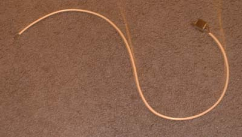
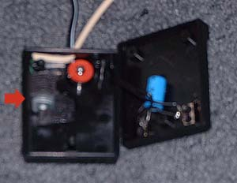
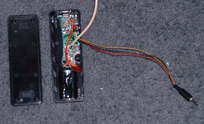
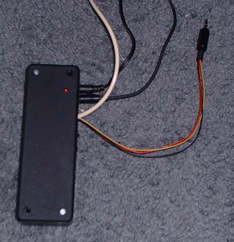
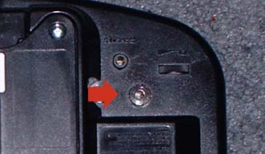
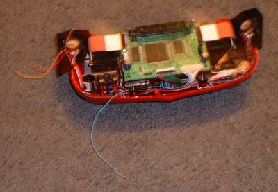

Rumble Pack
Here is how to hook up a Game Boy Color Rumble Pack by Nyko to the Virtual Boy.You will need: Rumble Pack, Virtual Boy, Soldering Iron, Solder, Drill/Drill Bits, Phillips Screw Driver, About 20 ft. of wire, 1/8" 3-Conductor headphone jack, 1/8" 3-Conductor headphone plug.
I recommend you have: Super Glue, Needle Nose Pliers, Sticky foam tape, Multimeter, Electrical Tape, 6"x2"x1" Project Box.
(Most of these can be found at Radio Shack)
Setting up the Electronics:
First you pull the circuit board from the plastic case that it comes in (You will probably have to drill the screws out because they used a trianglular shaped screw head.
Then you want to desolder the wires for the speakers (unless you want to use them)
Note: You should either be very careful with all the wires (theirs are very cheap and break easily), or desolder all of them and resolder better wires (what I did)
Depending on how you plan to mount this, you may have to put longer wires on for the battery. You will have to put longer wires for the motor and the audio cable. I put about 3ft. of cable for the motor, and you should put about 2ft. for the audio cable.
Mark which wire is Positive and Negative and desolder the wires for the motor and solder 3ft. wires to the motor and circuit board.

Desolder the wires for the power out and audio in (odd shaped plug)
Solder the three wires for the audio in to a 1/8" headphone plug, and to the circuit board where you desoldered the audio wires in the previous step. (Put the plastic cover for the plug on the wire before soldering.)
Find a suitable place in the controller to mount the motor and drill a hole to run the wire through. (I put mine in the AC Adaptor) (Mount the motor in the foam tape and make sure it is tight in the controller so it doesn't rattle).

If you plan to use the project box then do the following steps:

Cut out the screw holes from two opposite corners so the board and
battery pack will fit in.
Drill holes in the sides of the box that line up with the jacks,
switches, and adjustment wheel on the board.
Drill a hole in the top lined up with the light so you can tell when it
is on.
Take the foam tape and put it on the bottom of the board and battery
pack and stick them into the plastic box lining up with the holes.
Cut out a notch for the two sets of wires (motor and audio in wires) in
the box.
Put the lid on and put the two screws in the corners.
If you made it the same as mine, it should look like this completed

Setting up the Virtual Boy
You must first pull the Virtual Boy apart enough so you can get to the
speakers (see instructions on other page).
(Basically what you will be doing is adding another headphone jack, but
this one won't turn off the speakers).
Then drill a hole in the bottom of the VB for the 1/8" headphone jack
to screw into and put it in (make sure it won't interfere with the
insides of the VB).

Solder a wire to the positive and negative of each speaker (4 wires
total) (make sure they are long enough to reach the jack) (negative is
the striped cable - I think)

Connect the 2 negative wires together and solder them both to the
negative terminal of the headphone jack
Solder one of the other wires to one of the positive terminals on the
headphone jack, and the other to the other positive.
Screw the VB back together and plug the box into the new jack.
Plug in the box and turn it on, make sure the switches are set where
you want them and try it out.
If you don't get vibration, try headphones in the headphone jack on the
box. If you don't have sound, you may have to hook up the
negative of the battery to the negative of the audio in plug. (not sure
why, but that's what I had to do, must have lost connection
somewhere). If you do get sound but no vibration, check your
connection to your motor from the board.
{kind=link}